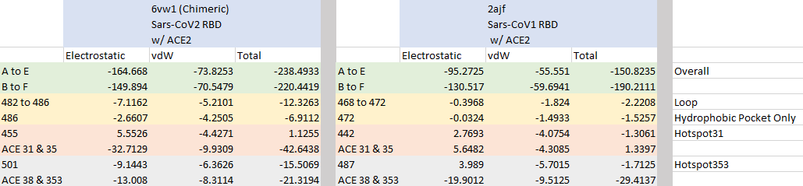

Quantifying the Interaction Energy Between the SARS-CoV-2 Spike Protein and ACE2
Energy functions measure quality of protein binding
In the previous lesson, we visualized the RBD-ACE2 complexes formed by SARS-CoV and SARS-CoV-2 and examined three regions of conformational differences (a loop site in the ACE2 binding ridge, hotspot 31, and hotspot 353). We presented qualitative explanations from the literature as to why these differences may help SARS-CoV-2 bind more strongly to the human ACE2 enzyme, but a theme of this course is to justify our arguments quantitatively. Our question, then, is how to measure the strength of protein binding in a local region of the complex.
In part 1 of this module, we searched for the tertiary structure that best “explains” a protein’s primary structure by looking for the structure with the lowest potential energy (i.e., the one that is the most chemically stable). In part, this means that we were looking for the structure that incorporates many attractive bonds present and few repulsive bonds.
To quantify whether two molecules bond well, we will borrow this idea and compute the potential energy of the complex formed by the two molecules. If two molecules bond together tightly, then the complex will have a very low potential energy. In turn, if we compare the SARS-CoV-2 RBD-ACE2 complex against the SARS-CoV RBD-ACE2 complex, and we find that the potential energy of the former is significantly smaller, then we can conclude that it is more stable and therefore bonded more tightly. This result would provide strong evidence for increased infectiousness of SARS-CoV-2.
In the following tutorial, we will compute the energy of the bound spike protein-ACE2 complex for the two viruses and see how the three regions we identified in the previous lesson contribute to the total energy of the complex. To do so, we will employ NAMD, a program that was designed for high-performance large system simulations of biological molecules and is most commonly used with VMD via a plugin called NAMD Energy. This plugin will allow us to isolate a specific region to evaluate how much this local region contributes to the overall energy of the complex.
Differences in interaction energy with ACE2 between SARS and SARS-CoV-2
Using the methods described in the tutorial, we calculated the interaction energies for each of the three regions of interest as well as for the total energy of the complexes for both SARS-CoV and SARS-CoV-2. The results of this analysis are shown in the table below.
 ACE2 interaction energies of the chimeric SARS-CoV-2 RBD and SARS RBD. The PDB files contain two biological assemblies, or instances, of the corresponding structure. The first instance includes chain A (ACE2) and chain E (RBD), and the second instance includes chain B (ACE2) and chain F (RBD). The overall interactive energies between the RBD and ACE2 are shown in the first two rows (green). Then, the individual interaction energies are shown from the loop site (yellow), hotspot 31 (red), and hotspot 353 (grey). Total energy is computed as the sum of electrostatic interactions and van der Waals (vdW) forces.
We can see in the table that the overall attractive interaction energy between the RBD and ACE2 is lower for SARS-CoV-2 than for SARS-CoV, which supports previous studies that have found the SARS-CoV-2 spike protein to have higher affinity with ACE2.
Furthermore, all of the three regions of interest have a lower total energy in SARS-CoV-2 than in SARS-CoV, with hotspot 31 (red) having the greatest negative contribution. We now have quantitative evidence that the conformational changes in the three sites do indeed increase the binding affinity between the spike protein and ACE2.
Nevertheless, we should be careful with making strong inferences of the infectiousness of SARS-CoV-2 based on these results. To add evidence for our case, we would need biologists to perform additional experimental work to demonstrate that the improved binding of SARS-CoV-2 translates into greater infectiousness in human cells.
Another the reason for our cautiousness is that proteins are not fixed objects but rather dynamic structures whose shape is subject to small changes over time. In the conclusion to part 2 of this module, we will learn how to analyze the dynamics of a protein’s movements within its environment.